Lab 1156
Rapidly deploy and configure your Java applications with WebSphere Liberty and OpenShift Container Platform
Overview
This lab provides fundamental hands-on experience with modernizing existing Java applications to WebSphere Liberty, deployed into a container platform, such as Red Hat OpenShift.
The focus of this lab is on the practical aspects of application deployment and configurations and not the analysis of the Transformation Advisor results. Other labs cover Transformation Advisor in detail.
Upon completion of this lab, you will have gained skills to download and use the Transformation Advisor migration bundle to deploy and configure your application in the following scenarios:
-
to a locally running WebSphere Liberty - useful for deploying to Liberty in a VM
-
to a container image – useful for deploying to Kubernetes
-
using the Liberty Operator – useful for deploying to OpenShift
IBM Cloud Transformation Advisor (Transformation Advisor) is an application modernization tool that is entitled through IBM Cloud Pak for Applications and WebSphere Hybrid Edition. Transformation Advisor helps you quickly evaluate on-premises Java EE applications for deployment to the cloud.
The Transformation Advisor tool provides the following value:
-
Identifies the Java EE programming models in the app
-
Determines the complexity of replatforming these apps by listing a high-level inventory of the content and structure of each app
-
Highlights Java EE programming model and WebSphere API differences between the WebSphere runtime profile types
-
Identifies Java EE specification implementation differences that might affect the app
-
Generates accelerators for deploying the application to Liberty and containers in a target environment
Additionally, the tool provides a recommendation for the right-fit IBM WebSphere Application Server edition and offers advice, best practices, and potential solutions to assess the ease of moving apps to Liberty or newer versions of WebSphere traditional. It accelerates application migrating to cloud process, minimizes errors and risks and reduces time to market.
Objective
The objectives of this lab are to:
-
Learn how to download the application migration bundle and use it to deploy an application to WebSphere Liberty running locally
-
Learn how to fully populate the migration bundle placeholders and build the application into a container image
-
Learn the role of Kustomize when deploying the migration bundle
-
Learn how to deploy your application to OpenShift with a single command
-
Learn how to create multiple configurations for the application and deploy them to OpenShift
Prerequisites
The following prerequisites must be completed prior to beginning this lab:
-
Familiarity with basic Linux commands
-
Have internet access
-
Access to the TechZone lab environment
Accessing the lab environment
-
Access the lab environment from your web browser.
The lab environment page is displayed, the lab environment contains six (6) Linux VMs, including workstation, and OpenShift Container Platform (OCP) Cluster VMs. The VM worstation is the one with the Graphical User Interface (GUI) for you to access and work in this lab.
Note: The workstation VM is the only VM that you access directly in the lab environment.
-
Click Red Hat icon of the workstation VM to access it.
-
Click techzone user to log in.

-
Enter the password as: IBMDm0s! and press Enter.

Note: That is a numeric zero in IBMDem0s!
The lab VM GUI is displayed.

Tips for working in the lab environment:
-
You can use the VM Desktop tools to fit to window or resize the window.

-
To copy the text from the lab guide into the lab environment, you must use the VM Desktop Send Text tool.

a. Copy the text from the lab guide that you want to paste into the lab environment.
b. Open a terminal window, or a text editor or a web browser in the VM Desktop where you want to copy the text to.
c. Click the Send Text icon in the VM Desktop tool bar, paste the text into its window, then again click Send Text to send the text to an open command shell and close its window.

The text is now copied to the terminal window, or the text editor or the web browser you opened in the previous step.
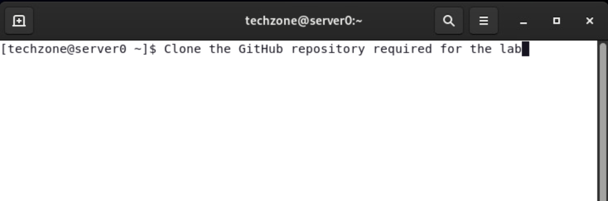
Lab Tasks
In this lab, you will use the Transformation Advisor migration bundle to build a container image and deploy an application to a local container for testing.
To simplify the lab and to allow you to focus on the migration bundle, certain software and artifacts have already been put in place for you. These are as follows:
-
Transformation Advisor has been installed and collected data has been loaded
-
docker (for creating and running images) has been installed
-
oc (OpenShift command Line tool for running OCP commands) has been installed
-
The PlantsByWebSphere Sample Application, built as an Enterprise Archive file (EAR) is available from the lab resource provided.
Part 1: Application Assesment
1.1 Pull down the Lab artifacts and setup lab environment
-
If you have not yet cloned the GitHub repo with the lab artifacts, in a previous lab, run the following command on your terminal:
a. Open a new Terminal window and clone the git repository to pull down the lab artifacts

b. Run the commands to clone the git repository to the local system
cd /home/techzone git clone https://github.com/IBMTechSales/appmod-pot-labfiles.gitc. Add “execute” permissions to the shell scripts
find ./appmod-pot-labfiles -name "*.sh" -exec chmod +x {} \; -
Start the PlantsByWebSphere application database
The PlantsByWebShere application database runs in a local docker container. Usethe command below to start the database.
docker start db2_demo_data
1.2 Launch Transformation Advisor (local)
Transformation Advisor provides a migration plan for each application being assessed for modernization. The migration plan includes a migration bundle of generated artifacts that accelerate the deployment of applications to Liberty in containers and Kubernetes / OpenShift.
The migration bundle includes diverse artifacts, depending on the needs of the application to accelerate the build and deployment of an application Container image into an OpenShift container platform.
The Transformation Advisor is installed locally on the Workstation VM.
-
Launch the Transformation Advisor tool using the steps below.
a. From Workstation VM Desktop Tool Bar, click the Terminal icon to open a Terminal window.

b. Launch the Transformation Advisor with commands:
cd /home/techzone/transformation-advisor-local-3.8.1 ./launchTransformationAdvisor.shWait for Transformation Advisor to initialize and display the action menu list.
c. Type 5 and press Enter to start the Transformation Advisor.
d. The Transformation Advisor application is started, right-click the application URL link and select Open Link to launch it in a web browser window.
The URL is displayed in the output from the TA command: http://server0.gym.lan:3000

The Transformation Advisor Home page is displayed in the Web Browser.

In the next section, you will create a new “Workspace” in Transformation Advisor and upload the saved results from the scan of a WebSphere Application Server that has a single application deployed, named “PlantsByWebSphere”.
1.3 Create new workspace and upload scan results from a WebSphere Application Server
In this section, create a new workspace named proof_of_concept.
A workspace is a designated area that will house the migration recommendations provided by Transformation Advisor based on the Data Collector scan results of your application server environment.
-
Create a new workspace named proof-of-concept
a. From the Transformation Advisor Home page, click the Create New button
b. Type proof_of_concept as the Workspace name. Then click the Create button
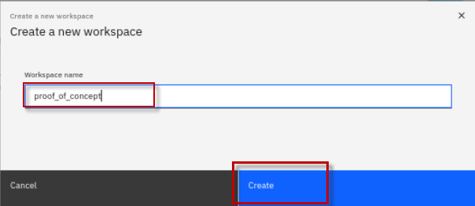
-
Upload an existing scan results file provided for the lab.
The scan results file is provided for you.
It was produced by running the Transformation Advisor Data Collector on a WebSphere Application Server that had the PlantsByWebSphere application deployed.
a. Click the Upload button
b. Click the Drop or add file link. Then click the Upload button
c. Navigate to Home > Techzone > appmod-pot-labfiles > labs > RuntimeModernization
d. Select pbw-collection.zip file. Then click the Open button

e. Once the pbw-collection.zip has been added, click on the Upload button to upload the results into Transformation Advisor.
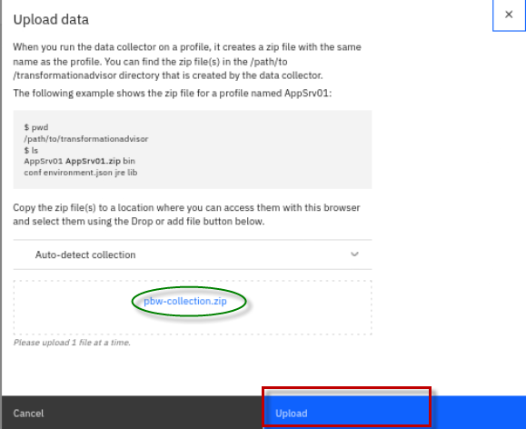
After a few moments, the application data will be uploaded to the Transformation Advisor UI.
The "proof_of_concept" workspace displays the “All Java Applications” page which shows the recommendations for the workspace.
There is a single application called plantsbywebsphereee6.ear.
By default, "WebSphere Liberty" is selected as a modernization target. All the information provided assumes that this application will be modernized to WebSphere Liberty.
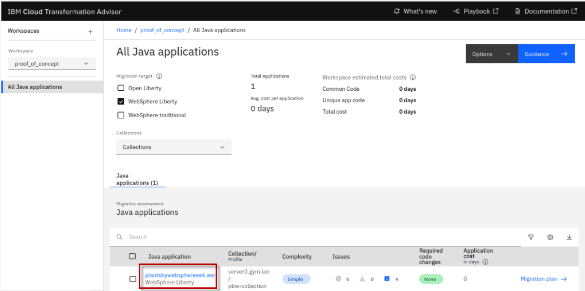
1.4 Analyze the plantsbywebsphereee6 application
Transformation Advisor provides detailed information about each application that has been analyzed. This application has a complexity of Simple.
Simple means:
- The application is ready to be deployed to WebSphere Liberty
- No changes to the source code are required

How is this application ready for deployment when it shows 4 issues?
In this case, the application has four Informational issues.
Informational issues do not prevent the application from executing on the new runtime (WebSphere Liberty) but there may be small changes in the application’s behavior.
If unexpected behavior is found during testing, then reviewing these Informational issues may help explain what is happening.
-
We are now ready to review the migration plan for this application.
a. Click on the Migration plan link at the end of the row of the plantsbywebsphereee6.ear application.

b. The Migration Plan page opens.
This page contains a summary of the application being migrated:
-
a preview of the files that will help during deployment (highlighted below)
-
a list of the application’s dependencies.
All the files can be downloaded in a single convenient migration bundle.
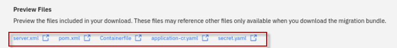
-
-
At the bottom of the screen, there is a Application Dependencies section.
This shows all the files, in addition to the application, that are required for a deployment. Plantsbywebspheeee6.ear has two dependencies.
a. Expand the section it to see the details
b. In this case, DB2 drivers called db2jcc.jar and db2cc_licence.jar are required for deployment

-
Download the migration bundle by clicking the Download button in the bottom right.
A zip file named “plantsbywebsphereee6.ear_migrationBundle.zip” will download to your Download folder.

We will go through a step-by-step process of using the Transformation Advisor migration bundle to deploy plantsbywebsphereee6.ear as follows:
-
Ensure the application can run locally on WebSphere Liberty
-
Build an immutable container image running on WebSphere Liberty
-
Deploy the image to OpenShift (and configure it) using a single command
-
Redeploy and reconfigure this image for a new environment with a single command
Part 2: Deploy PlantsByWebSphere app to a locally running WebSphere Liberty
In this step, you will create a new Liberty server to run the PlantsByWebSphere application.
Then, you will review the migration bundle to see what files you need to add, and use the provided server.xml Liberty configuration file. This file is used to configure Liberty by providing values for ports, security, context routes and by providing application-specific configuration.
2.1 Create a local Liberty Server
-
From a Terminal window, create a new local WebSphere Liberty server named pbwserver.
/home/techzone/wlp/bin/server create pbwserveroutput:
-
From the Terminal window, start the local WebSphere Liberty server.
/home/techzone/wlp/bin/server start pbwserverOutput:
-
Confirm the local WebSphere Liberty server is running. Open the web browser, open a new browser tab. Then go to: http://localhost:9080

2.1.3 Review the placeholder files in the migration bundle
In this section, you will review the migration bundle to see what files need to be added to the WebSphere Liberty configuration to run the application.
-
Let’s make note of the 3 placeholder files that are placed in the migration bundle.
The placeholder files are convenient references to let you know which files you will need to copy to the Liberty server.
Note: You will fully populate the migration bundle in later steps.
a. From the Terminal window, list the placeholder files in the migration bundle.
unzip -l /home/techzone/Downloads/plantsbywebsphereee6.ear\_migrationBundle.zip | grep placeholder
-
The target directory contains the placeholder file for the PlantsByWebSphere application EAR deployment file. This is a reminder that you need to copy the PlantsByWebSphere EAR file the Liberty server.
-
The src/main/liberty/lib directory contains the placeholder files for the DB2 database libraries required by the application. This is a reminder that you need to copy the DB2 libraries to the Liberty server.
-
2.1.4 Configure the Liberty server for PlantsByWebSphere
In this section, extract the migration bundle that you downloaded. Then, copy the required dependency files and server configuration to the Liberty server.
-
Extract the migration bundle to a new directory
-
Copy the DB2 libraries to the directory defined in the "DB2 driver configuration" in the server.xml file.
-
Copy the PlantsByWebSphere EAR file to the “apps” directory of the Liberty server
-
Copy the server.xml file from the migration bundle to the Liberty server, replacing the default server.xml file
-
Extract the migration bundle that you downloaded
mkdir /home/techzone/Student/labs/appmod/migration-bundle cd /home/techzone/Student/labs/appmod/migration-bundle cp /home/techzone/Downloads/plantsbywebsphereee6.ear_migrationBundle.zip . unzip plantsbywebsphereee6.ear_migrationBundle.zip -
List the directory of the extracted migration bundle
ls -lThe migration bundle contains the files to build and deploy the PlantsByWebSphere application to Liberty, in containers, and on OpenShift.
-
Copy the PlantsByWebSPhere application binary file into the apps location in Liberty
cp /home/techzone/appmod-pot-labfiles/labs/RuntimeModernization/plantsbywebsphereee6.ear /home/techzone/wlp/usr/servers/pbwserver/apps -
Create the global shared directory in Liberty.
This is where you will copy the DB2 libraries for Liberty
mkdir /home/techzone/wlp/usr/shared/config/lib/global -
Copy the DB2 driver files into the global shared location in Liberty.
This will make it available to any application running in Liberty.
cp /home/techzone/Student/LabFiles/db2_drivers/* /home/techzone/wlp/usr/shared/config/lib/global -
Copy the server.xml file from the migration bundle into the Liberty server to replace its existing configuration. Choose to overwrite the existing file if prompted.
cp /home/techzone/Student/labs/appmod/migration-bundle/src/main/liberty/config/server.xml /home/techzone/wlp/usr/servers/pbwserver
Now that the PlantsByWebSphere binary and its configuration are added to the Liberty server, the application is ready to be run form the web browser.
-
Run the PlantsByWebSphere application from the browser.
http://localhost:9080/PlantsByWebSphereNow the application is running in Liberty, and the main page is displayed.
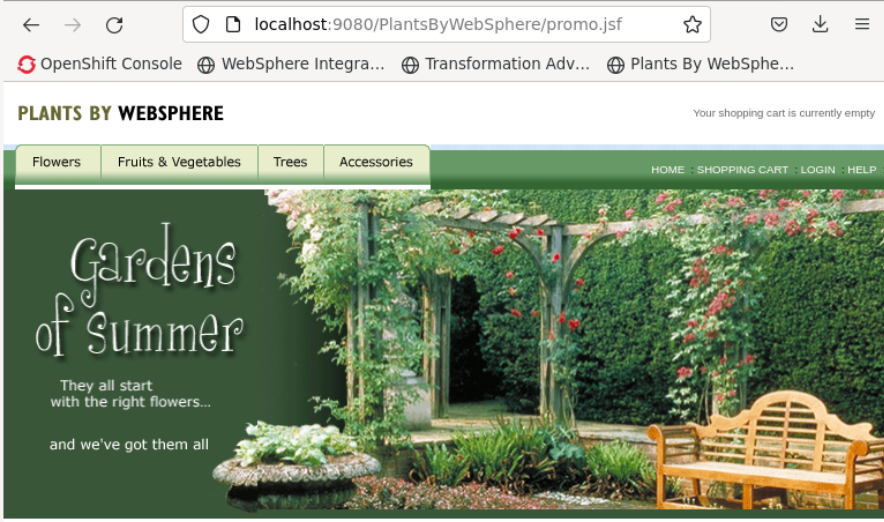
-
Attempt to click on any of the tabs: “Flowers”, Fruits & Vegetables”, or “Trees”.
Note the exception. This is an expected erorr. The issue is in the JPA persistence (Database access). A user is not defined, and therefore authentication to the database failed.
These pages should display a catalog of items in their respective category, which are rereived from the application database.
So what happened?
Transformation Advisor does not collect any sensitive data for the application server. This means the application-specific configuration information in the server.xml file has not been set. In this case, the username and password to access the database are missing.
In the next section, you will review the server.xml file and add the sensitive data required to access the application database.
2.1.5 Review the server.xml file
Now you will review the server.xml file and set the necessary configuration information.
The server.xml file defines a set of features that the application requires. By importing only the necessary features to support the application’s API needs, the footprint of the deployed application and Liberty server is kept as small as possible.
-
Review the server.xml file
Using the gedit editor in a Terminal window, open the server.xml file located in the Liberty server
gedit /home/techzone/wlp/usr/servers/pbwserver/server.xml- Section 1 contains the features that the application requires, and these are discovered automatically during analysis performed the Transformation Advisor Data Collector.

-
Section 2: Defines the resources required to access the database
-
The authdata defies the BD2 user and password that is used by the datasources. These refer to variables that are defined in the server.xml file.
-
The jdbc driver defines the required libraries. These are the libraries you copied into this location via the script
- Section 3: The datasource contains all the information required to access the database: Database user, password, database name, host, and port number.
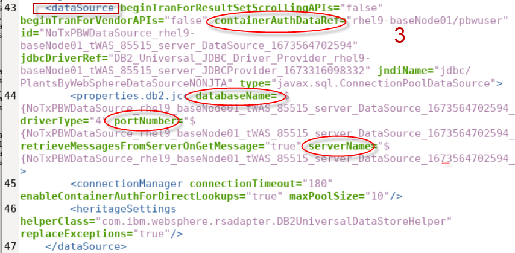
- Section 4 contains the variables for the non-sensitive configuration data. For example, the port to run the server on. The values of these variables are collected by Transformation Advisor.

- Section 5 contains the sensitive data variables.
You can see that the values for these variables are all blank, as this information is never collected by Transformation Advisor.
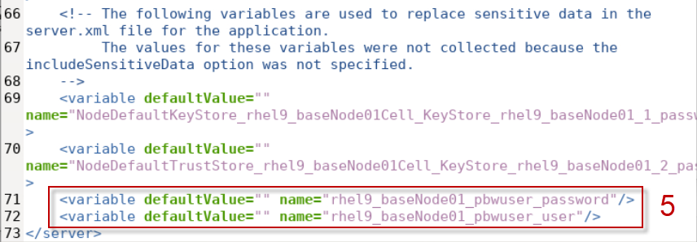
-
The reason that the PlantsByWebSphere application retuned an “Exception” is because the values for the sensitive variables has not been set.

Next, you will update the server.xml to include the credentials required to access the application database.
2.1.6 Update the server.xml and retest the PlantsByWebSphere application
-
From a Terminal window, stop the Liberty server named pbwserver with the following command:
/home/techzone/wlp/bin/server stop pbwserver -
From the gedit editor that you have open, update the values in the server.xml file for the sensitive data as illustrtated below:
a. Scroll to the bottom of the server.xml file to view the sensitive-data variables.
b. Set the default value for rhel9_baseNode01_pbwuser_password to: db2inst1-pwd
c. Set the default value for rhel9_baseNode01_pbwuser_user to: db2inst1

d. Save and close the server.xml in the editor
-
From a Terminal window, start the Liberty server named pbwserver with the following command:
/home/techzone/wlp/bin/server start pbwserver -
Reload and test PlantsByWebSphere application in the browser
http://localhost:9080/PlantsByWebSpherea. Click the Flowers tab. The catalog of flowers should now be displayed.

-
From a Terminal window, stop the Liberty server named pbwserver with the following command:
/home/techzone/wlp/bin/server stop pbwserver
Checkpoint
At this point in the lab, you have successfully demonstrated the PlantsByWebSphere application runs successfully in WebSPhere Lberty on a local VM.
In the next sections, you will deploy the PlantsByWebSphere application to containers and Red Hat OpenShift.
Part 3: Create and run the PlantsByWebSphere application as a container image
3.1 Explore the Containerfile used to build PlantsByWebSphere as a container image
In the previous section, you used the server.xml to get the application running on a local Liberty instance. This was to show you how the Transformation Advisor server.xml file is used. If you are moving to Liberty in VMs as your new runtime, then you are done!
However. if containers are to be your final destination, this section explores the Transformation Advisor migration bundle artifacts that accelerate application deployment to Lberty in containers.
In the case of Simple applications, it is not necessary to carry out a separate step of deploying to a local Liberty instance at all. Instead, by using the Transformation Advisor migration bundle, you can deploy your application to Liberty running in a container all in one go.
This is what we will do now.
-
Add the PlantsByWebSphere binary file to your migration bundle, and remove the placeholder.
cp /home/techzone/appmod-pot-labfiles/labs/RuntimeModernization/plantsbywebsphereee6.ear /home/techzone/Student/labs/appmod/migration-bundle/target rm /home/techzone/Student/labs/appmod/migration-bundle/target/plantsbywebsphereee6.ear.placeholder -
Add the db2 library files to your migration bundle, and remove the placeholder.
cp /home/techzone/Student/LabFiles/db2_drivers/* /home/techzone/Student/labs/appmod/migration-bundle/src/main/liberty/lib rm /home/techzone/Student/labs/appmod/migration-bundle/src/main/liberty/lib/*.placeholder -
Update the server.xml file to remove the TLS configuration which is not used.
cp /home/techzone/appmod-pot-labfiles/labs/RuntimeModernization/lab_2161-1/deploy-config-updates/apps-pbw/server.xml /home/techzone/Student/labs/appmod/migration-bundle/src/main/liberty/config -
The migration bundle is ready to be used to generate an image of your application running on WebSphere Liberty. To do this, we will use the Containerfile that comes with the migration bundle.

a. Explore the Containerfile in the migration bundle
gedit /home/techzone/Student/labs/appmod/migration-bundle/Containerfile-
The FROM statements in the Containerfile pull in the following two images.
-
Open JDK 8
- Latest WebSphere Liberty


- The RUN commands in the Containerfile create the necessary folder structures and copies the binary files from the migration bundle into the appropriate locations in the image.

- There are several lines in the file that have been commented out.
By default, the Containerfile assumes that your application is available as a binary file. However, it can also be used to build your application from source code. The full details of how to do this can be found in README.md in the migration bundle.

b. Close the gedit editor. DO NOT SAVE ANY CHNAGES TO THE FILE!
-
3.2 Setup, build and run PlantsByWebSphere in a local container
In this section, you will build and run the PlantsByWebSphere application in a local container.
-
Build the container image from the migration bundle using docker
cd /home/techzone/Student/labs/appmod/migration-bundle docker build -f /home/techzone/Student/labs/appmod/migration-bundle/Containerfile --tag apps/pbw .- -f is the path to the Containerfile used to build the image
- --tag allows you to define the name and version of the image to build
- . is the current directory of the migration bunlde that includes the artifacts for building the container image.
Note: Ignore the following warning message. This will be fixed in the next release of Transfromation Advisor
1 warning found (use --debug to expand): - Empty continuation line found in: RUN mkdir -p /config/apps && mkdir -p /sharedlibs && cp ./src/main/liberty/config/* /config && cp ./target/*.*ar /config/apps/ && if [ ! -z "$(ls ./src/main/liberty/lib 2>/dev/null)" ]; then cp -r ./src/main/liberty/lib/* /sharedlibs; fi -
Confirm the container image has been built
docker images | grep apps/pbw -
The next step is to run the image using the docker run command.
docker run -d --rm -p 9080:9080 --name pbw-app apps/pbw- -d start the container in 'detached' mode so you get your command prompt back
- --rm remove the container when it is stopped
- -p expose the HTTP port
- --network connect the container to the same docker network as the DB2 container
- --name is the name we are giving the container
-
Check that the contaier is up and running.
docker ps | grep pbw-app -
From the browser, access the PlantsByWebSphere application that is running in the local container
http://server0.gym.lan:9080/PlantsByWebSphere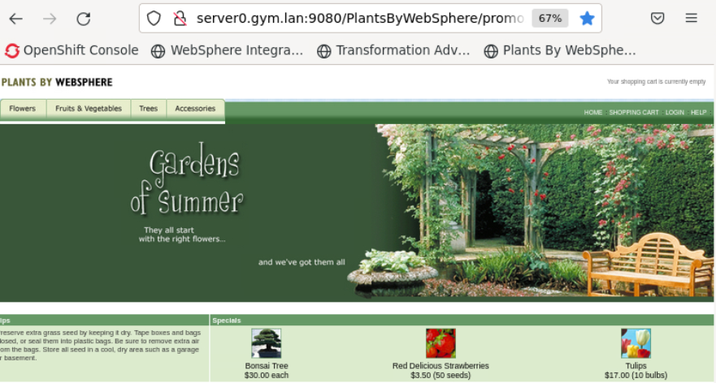
Attempt to click on any of the tabs: “Flowers”, Fruits & Vegetables”, or “Trees”.
Note the exception. This is an expected erorr. The issue is in the JPA persistence (Database access). A user is not defined, and therefore authentication to the database failed.

The error is because we are using the unchanged server.xml file that came with the migration bundle.
As outlined already, Transformation Advisor does not collect any sensitive data so the application specific configuration information has not been set.
Considerations & recommendations:
One option here is to update the server.xml file, add in the sensitive data values that Transformation Advisor did not collect and rebuild the image.
However, a big part of container image value is that they are immutable. No matter where you take and deploy the image the operating system, runtime, security patch level, etc. will be the same.
This gives you great reproducibility and gets away from the classic but it works for me! issue. We lose much of this value if we bake in the configuration with the image, as we will have to produce an image for each new configuration.
Instead of using the exact same image in each of your development, staging and production environments, you would be using different images.
It is never best practice to hard code configuration into your image.
In the next section we will look at how the migration bundle helps you manage this configuration easily across all your environments and how it will simplify deployment to your OpenShift cluster. The migration bundle uses Kustomize to help achieve this.
3.2 Understand how Kustomize is used in the migration bundle
kustomize is simple way to manage configuration across all your different deployments and environments without the need for templates.
By using overlays, it allows you to break out your basic configuration information (ports, names, hosts, etc.) from your sensitive data (usernames, password, etc.) that are likely to change in every deployment.
Every kustomize artifact is plain YAML and can be validated and processed in a standardized way. Plus, it makes them very human readable! It is natively built into kubectl and the OpenShift client.
The structure of the kustomize folder is as follows.
-
base contains your expected standard deployment in a config map (because it is not sensitive data). It also contains the application.cr-yaml file that will execute the deployment and mount the necessary secrets that are created from the secret file.
-
overlays contains all your different deployment configurations. In this case, only a single deployment has been created for your dev systems. The secret file will contain all your application-specific sensitive data that will be created as secrets in OpenShift.

Note: In the next section we will use this kustomize structure to deploy your application image.
Further information on kustomize can be found at http://kustomize.io
4 Deploy to OpenShift with config
You have now created a a container image without any application specific configuration. In this section, we will push that image to an image repository and then deploy it into OpenShift, along with its configuration, with a single command.
4.1 Update the Kustomize structure to move the configmap configuration to the overlays folder
It is common to have different application configuration between deployments such as dev and staging. In this lab, we use different DB2 application databases between the two configurations. For this reason , we want the configMap to be located in the Kustomize overlays folder, rather than the base where it is placed, by default, in the Transformation Advisor migration bundle.
For the lab, we have provided the updated file structure for you. You just need to run the commands below to update the migration bundle.
-
Run the following commands to update the Kustomize structure as stated above.
rm -rf /home/techzone/Student/labs/appmod/migration-bundle/deploy/kustomize cp -r /home/techzone/appmod-pot-labfiles/labs/RuntimeModernization/lab_2161-1/kustomize /home/techzone/Student/labs/appmod/migration-bundle/deploy/a. List the updated directory structure
ls -Rl /home/techzone/Student/labs/appmod/migration-bundle/deploy/kustomizeNotice the plantsbywebspheree6-configmap.yaml file is now in the overlays/dev folder.
The kustomize.yaml files in the base and overlays/dev folder have been updated to reflect the new location of the configmap yaml file.
4.2 Update the YAML files to add the application configuraton for deployment
Recall, the container image does not have the application configuration baked in.
You will make the following updates to the configuration YAML files in the migration bundle for the PlantsByWebSphere application deployment to OpenShift.
-
Update the overays/dev/plantsbywebsphereee6-secret.yaml file
- Add the sensitive-data to the secret YAML file
-
Update the overlays/dev/plantsbywebsphereee6-configmap.yaml file
- Add the database host imformation to access the dev database
-
Update the base/application-cr.yaml file
- Add the referece to the container image
- Disable TLS, as we do not have this configured in our environment
- Accept the Liberty license
TIP: To perform the updates, you will copy updated versions of the yaml files from the lab artifacts that we provide for the lab. This way you can focus on the outcomes, rather that the tedious task of editing text files.
-
Update the plantsbywebsphereee6-secret.yaml file, which contains the sensitive-data for the application. You will copy an updated version of the file that we have prepared for the lab
cd /home/techzone/Student/labs/appmod/migration-bundle/deploy/kustomize/overlays/dev/ cp /home/techzone/appmod-pot-labfiles/labs/RuntimeModernization/lab_2161-1/deploy-config-updates/apps-pbw/plantsbywebsphereee6-secret.yaml /home/techzone/Student/labs/appmod/migration-bundle/deploy/kustomize/overlays/devThe update to the plantsbywebsphereee6-secret.yaml in the overlays/dev directory is now complete. The sensitive data is encoded and added to the yaml file.
a.
How did we encode the values?We updated the values in the YAML file with the sensitive data by Base64 encoding the values as illustrated below.
- We encoded the following values:
-
user: db2inst1
echo db2inst1 | base64
The encoded value is: ZGIyaW5zdDEK
-
password: db2inst1-pwd
echo db2inst1-pwd | base64
The encoded value is: ZGIyaW5zdDEtcHdkCg==
-
Update the plantsbywebsphereee6-configmap.yaml file, which contains the database name and host for the dev database
cd /home/techzone/Student/labs/appmod/migration-bundle/deploy/kustomize/overlays/dev cp /home/techzone/appmod-pot-labfiles/labs/RuntimeModernization/lab_2161-1/deploy-config-updates/apps-pbw/plantsbywebsphereee6-configmap.yaml /home/techzone/Student/labs/appmod/migration-bundle/deploy/kustomize/overlays/devThe update to the plantsbywebsphereee6-configmap.yaml in the overlays/dev directory is now complete. The database host for the dev database has been added to the yaml file.

-
Update the application-cr.yaml file
The application-cr.yaml is the WebSphere Liberty custom resource used to deploy the PlantsByWebSphere application.
cd /home/techzone/Student/labs/appmod/migration-bundle/deploy/kustomize/base/ cp /home/techzone/appmod-pot-labfiles/labs/RuntimeModernization/lab_2161-1/deploy-config-updates/apps-pbw/application-cr.yaml /home/techzone/Student/labs/appmod/migration-bundle/deploy/kustomize/baseThe updated application-cr.yaml in the base directory is now complete. The PlantsByWebSphere application configuration is finalized.
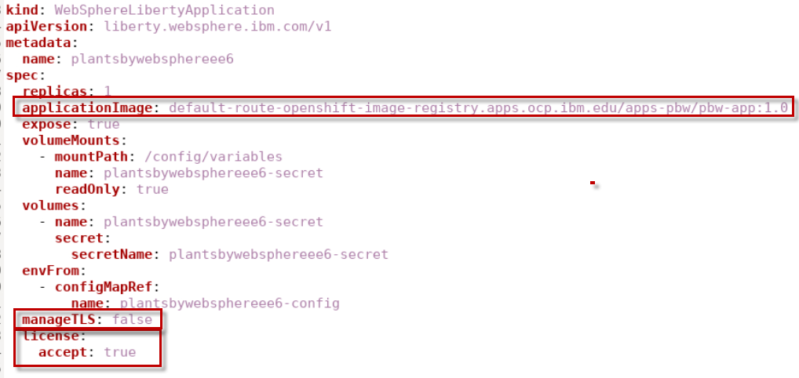
### 4.3 Deploy the application and its configuration to OpenShift
To deploy the PlantsByWebSphere application to OpenShift, you must perform the following basic steps.
-
Tag the container image, appropriately tagging for the OpenShift internal registry
-
Push the tagged container image to the OpenShift internal registry
-
Use a single command to deploy and configure the application to openShift
-
Tag the container image
a. Go to a Terminalwindow.
b. Tag the container image using the following docker command:
docker tag apps/pbw default-route-openshift-image-registry.apps.ocp.ibm.edu/apps-pbw/pbw-app:1.0 -
Verify the image was tagged:
docker images | grep pbw-app
-
Login to OpenShift to run the commands to push and deploy the image
oc login -u ocadmin -p ibmrhocp -
Create a new project where you will dpeloy the application
oc new-project apps-pbw -
Login to the OpnShift internal registry so you can push the image
docker login -u $(oc whoami) -p $(oc whoami -t) default-route-openshift-image-registry.apps.ocp.ibm.edu -
Push the container image to OpenShift internal registry
docker push default-route-openshift-image-registry.apps.ocp.ibm.edu/apps-pbw/pbw-app:1.0
In previous steps, you configured the sensitive data that is needed, accepted the license, pointed to the image that is needed to pull, and logged into OpenShift. Now, with a single command, you can deploy to OpenShift and configure the image.
You must specify which overlay will provide the configuration (dev in this case).
-
Deploy the PlantsByWebSphere application to OpenShift
cd /home/techzone/Student/labs/appmod/migration-bundle/deploy/kustomize oc apply -n apps-pbw -k overlays/dev -
Verify the deployment
oc get deployment -n apps-pbwWait for the deployment to be ready and availabe, as illustrated below:
NAME READY UP-TO-DATE AVAILABLE plantsbywebsphereee6 1/1 1 1 -
Verify the appliation pod is ready.
This may take a few moments. Just keep checkig with command below
oc get pods -n apps-pbwWait for the pod to be ready and availabe, as illustrated below:
NAME READY STATUS plantsbywebsphereee6-7476449666-shnx8 1/1 Running -
From the browser, navigate to the PlantsByWebSphere route for the dev deployment:
http://plantsbywebsphereee6-apps-pbw.apps.ocp.ibm.edu/PlantsByWebSphereThe PlantsByWebSphere main page is displayed.
-
Click on the Trees category and view the trees that are loaded in the dev database.
This catalog of trees was retrieved from the DB2 database in the dev configuration.

4.4 Explore the WebSphere Liberty Operator in OpenShift
In this section, you will take a look at the WebSphere Liberty Operator in the OpenShift console to see what has been deployed.
-
Login to OpenShift console
a. Open a new tab in the web browser
b. Click on the OpenShift Console bookmark on the bookmark toolbar
c. Login credentials:
-
Username: ocadmin
-
Password: ibmrhocp
-
-
View the IBM WebSphere Liberty Operator
a. Click on Operators > Installed Operators in the left-hand menu
b. Select apps-pbw in the Project filter
c. Type Liberty in the Name filter
d. Click on IBM WebSphere Liberty
-
View the WebSphereLibertyApplication Deployment
a. Click on the tab called WebSphereLibertyApplication
b. You will see the plantsbywebsphereee6 application listed in the ‘dev’ namespace
b. Click on the link called plantsbywebsphereee6 under the Name column

c. Select the Resources tab

d. Select the link for the Deployment
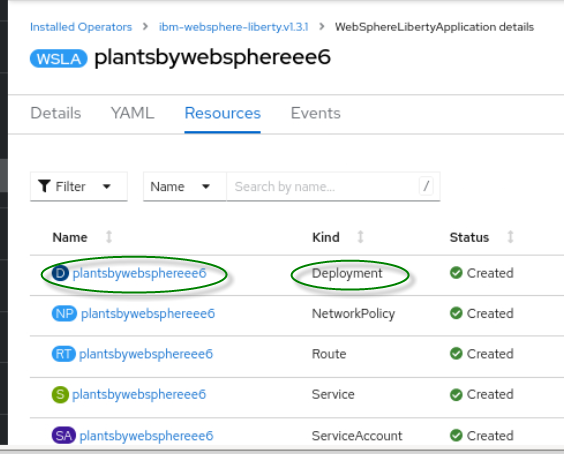
e. The PlantsByWebSphere deployment has one pod running

-
View the WebSphereLibertyApplication Route
a. Return to the plantsbywebsphereee6 operator page

b. Click the Resources tab
c. Select the link of Kind: route
d. Click on the Location link for the route
http://plantsbywebsphereee6-apps-pbw.apps.ocp.ibm.edu
e. The Welcome to Liberty page is displayed in a new Browser tab.

f. Append the context root ‘PlantsByWebSphere’ to access the PlantsByWebSphere application
http://plantsbywebsphereee6-apps-pbw.apps.ocp.ibm.edu/PlantsByWebSphere
4.5 Re-deploy app with different configuration to OpenShift
We have deployed the PlantsByWebSphere application with its configuration to dev, using a single kustomize command.
In this section, we will deploy the same application again with a new configuration for staging, again using a single kustomize command.
-
Create a new overlay directory called staging that will store the new staging configuration, coping the existing dev directory.
cd /home/techzone/Student/labs/appmod/migration-bundle/deploy/kustomize/overlays cp -r dev staging -
Update the plantsbywebsphereee6-configmap.yaml file, which contains the database name and host for the staging configuration.
To update, use the command below to copy a completed version of the config map yaml file to the new configuration for the staging configuration.
cp /home/techzone/appmod-pot-labfiles/labs/RuntimeModernization/lab_2161-1/deploy-config-updates/apps-pbw/plantsbywebsphereee6-configmap-staging.yaml /home/techzone/Student/labs/appmod/migration-bundle/deploy/kustomize/overlays/staging/plantsbywebsphereee6-configmap.yamlThe update to the plantsbywebsphereee6-configmap.yaml in the overays/staging directory is now complete. The database serverName for the staging configuration has been added to the configmap yaml file, as illustrated below.

-
From the kustomize directory, apply the new staging overlay
cd /home/techzone/Student/labs/appmod/migration-bundle/deploy/kustomize oc apply -n apps-pbw -k overlays/stagingNote: that the configmap and secret were configured, but the application is unchanged, as illustrated below.
configmap/plantsbywebsphereee6-config configured secret/plantsbywebsphereee6-secret configured webspherelibertyapplication.liberty.websphere.ibm.com/plantsbywebsphereee6 unchanged -
Restart the PlantsByWebSphere application, to work around a bug in the PlantsByWebSphere app.
-
Ensure the pod has restarted
oc get pods -n apps-pbwThe STATUS State should be Running
NAME READY STATUS plantsbywebsphereee6-6d8979cc99-hj4fg 1/1 Running -
From the browser, navigate to the PlantsByWebSphere route for the application:
http://plantsbywebsphereee6-apps-pbw.apps.ocp.ibm.edu/PlantsByWebSphereThe PlantsByWebSphere main page is displayed.
a. Click on the Home link on the application main page

b. Click on the Trees category and view the trees that are loaded in the staging database.
For reference, this catalog of trees was retrieved from the dev database. Notice the name of the trees are different.
Summary
Congratulations!
You have successfully completed the core learning objectives in the lab
In this lab, you learned how to deploy applications to WebSphere Liberty using the WebSphere Liberty Operator and the deployment artifacts produced by Transformation Advisor in its migration bundle.
You explored the options for deployment:
- locally running Liberty
- Liberty as an image running in local container
- Liberty as an image running in OpenShift.
You learned how to easily configure deployments to OpenShift to allow the same immutable image to be deployed for different configurations such as ‘dev’ and ‘staging’ environment deployments.
You learned about some of the practical ways you can secure your configuration data.
You explored the PlantsByWebSphere assessment details and reports in Transformation Advisor.
You may continue your learning journey with the optional sections of the lab.
Optional Sections:
Click to expand: Section 5: (Optional) GitOps and configuration management
## 5 GitOps and configuration management At this point we have two distinct elements for deployment: the **application image** and the **configuration for that image for each potential environment**. In the GitOps model, these two elements are stored in separate Git repositories. You can further distribute the configuration into different repositories for each environment. This approach allows you to treat configuration as if it were code and to apply standard code development techniques such as Pull Requests, code review and maintain a full audit history. This approach delivers excellent controls and oversights for configuration changes for your OpenShift clusters, especially as you promote changes through your environments.  This illustration above comes from an excellent article on real world GitOps:
Click to expand: Section 6: (Optional) Exploring the PlantsByWebSphere application in the proof_of_concept workspace
## 6 Exploring the PlantsByWebSphere application in the proof_of_concept workspace IBM Cloud Transformation Advisor (TA) analyzes application and configuration data collected from Java application server environments. TA delivers great insights that help organizations plan and implement a modernization journey to WebSphere Liberty and Kubernetes base container platform for existing Java applications. TA provides recommendations for modernization which includes and considers application complexity, dependencies, potential issues, and estimated development effort.  1. In a browser window, return to Transformation Advisor using the following URL: http://localhost:3000 2. Open the **proof-of-concept** workspace, if it is not already open  3. Scroll down to the **Java applications** section and note the high-level summary for the **plantsbywebsphereee6.ear** application assessment. - Complexity - Issues - Required code changes - Application cost (in days for development)  This workspace has only a single application name **plantsbywebsphereee6.ear**. It is summarized as **simple** to modernize to WebSphere Liberty. ***Complexity values and their meanings:*** **Simple**: The application is ready for deployment, no access to the source code is required. - Simple complexity value typically represents about 20% of applications. **Moderate**: Code changes are required before deployment; however, these code changes are well known, and specific help is provided for each issue to assist in resolving it. - Moderate complexity value typically represents about 80% of applications. **Complex**: The application uses a technology that does not have a direct equivalent in the new runtime and a new approach will need to be adopted. In our experience, only about 1 in 6 customers have these kinds of applications. - Complex complexity value typically represents less than 1% of applications. 4. Click on **plantsByWebSphereee6.ear** which will expand the analysis  a. Scroll down, noting the groups or categories of analysis available - **Complexity rules** - **Required code changes** - **Issue details** - Critical - Warning - Informational - **Additional reports** - Technology report - Inventory report - Analysis reports 5. View the **Analysis Report** for more detailed application information **Analysis Report** The **Detailed Migration Analysis Report** does a deep dive on the preferred migration target to help you understand any migration issues, like deprecated or removed APIs, Java SE version differences, and Java EE behavioral differences. a. Click on the **Analysis report** link.  b. The **Analysis report** will open in a new browser tab  c. Note the **target** - Because the **source** was traditional WebSphere v8.5.5, which is Java EE 6, the target is also EE6. - Because the source was running Jave SE 8, the target is also set to Java SE 8. By default, Transformation advisor recommends the first step of modernization to Liberty that requires the minimal amount of change and effort. You may use the binary scanner with the **--ta** option if you want to assess the modernization effort to newer versions Java, Jave EE, or Jakarta EE. Running the binary scanner with the **-ta** option produces an archive file that can be loaded into Transformation Advisor for analysis. d. Click on the **Information** label, to review the details of this item.  The **Information** rules provide migration related considerations. Be aware of these rules during testing. Many of these rules relate to connectivity to other resources that need to be considered during migration. e. You may review the Information rules for PlantsByWebSphere migration.  6. Return to the **Cloud Transformation Advisor** browser tab that shows the **plantsbywebsphereee6.ear details** page. Then click on **Inventory Report**, which will open in a new browser tab.  a. Scroll down and review the Inventory Report, which is especially useful in larger applications. The **Inventory report** provides a high-level inventory of the content and structure of each application, plus information about potential deployment problems and performance considerations.  b. Scroll down to the bottom of the **Inventory report** and locate **the Contained Archives** section. The inventory report provides valuable insights into utility jars that are contained in the application. It also provides the ‘package’ name of the utility jar. This is extremely valuable to help determine what 3rd party utilities are used by the application. c. Notice the PlantsByWebSphere application contains utility jar named **‘pbw-lib’jar**’. The archive package is “ibm.com.websphere’, indicating it is NOT a 3rd party utility jar.  d. Return to the **Cloud Transformation Advisor** browser tab that shows the **plantsbywebsphereee6.ear details** page. Then click on **Technology report**, which will open in a new browser tab. The **Technology report** provides details on which editions of Liberty support the technologies used by the applications.  a. Scroll down Technology Report, which can quickly help assess which Java EE API technologies that the PlantsByWebSphere application uses, and which editions of Liberty the APIS are available.  b. As you see from the report above, the APIs used in the PlantsByWebSphere application are available in ALL editions of Liberty.